Ligas:
Selecione uma liga...
Copa América
Taça Glória Eterna
Euro
Campeonato Italiano
Copa das Estrelas
Ligas América
Copa
Premier
Campeões
Redes:
Selecione uma rede
Telegram
YouTube
Sair
Betano | Taça Glória Eterna
Mercado Ranking:
Ambas Sim
Ambas Não
Over 1.5
Under 1.5
Over 2.5
Under 2.5
Over 3.5
Under 3.5
Casa Vence
Fora Vence
5 ou mais Gols
Mostrar Ranking
Greens: 0%
Reds: 0%
Horas:
3 horas
6 horas
12 horas
24 horas
Mercado:
Ambas Sim
Ambas Não
Casa vence
Fora vence
Over 1.5
Under 1.5
Over 2.5
Under 2.5
Over 3.5
Under 3.5
Over 5+
Resultado:
FT
HT
Gols: 0
Média Gols Por Hora: 0
📊
H
1
4
7
10
13
16
19
22
25
28
31
34
37
40
43
46
49
52
55
58
⚽️
✅
📊